Geomorph - Pour
commencer
Le démarrage
La barre
de menus
La fenêtre
de création d'un nouveau
document
La boîte à
outils
L'organisation de vos
travaux Povray
Quelques conseils en terminant
Le démarrage
Si l'installation a bien fonctionné, vous devriez retrouver une
icône Geomorph  sur votre bureau
après l'avoir
rafraîchi.
sur votre bureau
après l'avoir
rafraîchi.
Si ce n'est pas le cas, vous pouvez démarrer
l'application en tapant geomorph dans une console,
ou sous KDE, en tapant geomorph après
avoir fait Alt-F2.
Voici la structure générale d'un bureau Geomorph:
|
Pile de
fenêtres de documents
|
|
La navigation entre les documents se fait à l'aide de la barre
des tâches KDE ou Gnome.
Au démarrage, seule la barre de menus est affichée.
La barre
de menus
Pour commencer, cliquez sur "Créer un nouveau
document"  .
Une fenêtre de contrôle s'affiche à gauche, de
même qu'une fenêtre de document au
centre.
.
Une fenêtre de contrôle s'affiche à gauche, de
même qu'une fenêtre de document au
centre.
Parmi les autres boutons que vous utiliserez
régulièrement, notez "enregistrer" 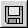 (fortement
conseillé!), "annuler"  et "refaire" .
et "refaire" .
Pour connaître la description d'un bouton, faites glisser le
curseur de souris au-dessus.
Les menus Fichier / Édition /
Outils / ? donnent accès aux mêmes fonctions que
les boutons.
La fenêtre de
création d'un nouveau
document
La fenêtre de création est dite
"modale", dans le sens qu'aucune autre fenêtre de Geomorph n'est
cliquable lorsqu'elle est active, même celle du document.
De cette façon, les paramètres de création
ne peuvent pas interférer avec les autres documents ouverts par
Geomorph.
Les icônes  et
et  exécutent Povray pour tester l'image
générée. Le premier demande la scène
*.pov à utiliser, le second utilise la scène par
défaut ou la dernière choisie.
exécutent Povray pour tester l'image
générée. Le premier demande la scène
*.pov à utiliser, le second utilise la scène par
défaut ou la dernière choisie.
"OK" remplace la fenêtre de création par la boîte à outils.
Par défaut, c'est une image de relief type "uniforme"  d'un gris neutre
qui est générée. Elle peut être
utilisée comme canevas pour dessiner avec le crayon "relief" de
la fenêtre d'outils (
d'un gris neutre
qui est générée. Elle peut être
utilisée comme canevas pour dessiner avec le crayon "relief" de
la fenêtre d'outils ( ->
-> ), ou bien comme point de départ d'une
déformation ou d'un ajout de bruit.
), ou bien comme point de départ d'une
déformation ou d'un ajout de bruit.
Terrain
"uniforme"
sur
lequel on a dessiné un relief
en bosse (arrière-plan) et en creux (avant-plan)
Essayez les subdivisions 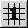 et  pour obtenir des reliefs classiques.
Cliquez à répétition sur le bouton
"Rafraîchir"
pour changer la racine pseudo-aléatoire, et vous verrez
défiler une série de reliefs de disposition
différente, mais
de caractéristiques comparables. La FAQ
décrit sommairement la différence entre les deux types de
subdivision. La
subdivision 2 offre un contrôle des fréquences (en fait,
des longueurs d'ondes exprimées en pixels).
pour obtenir des reliefs classiques.
Cliquez à répétition sur le bouton
"Rafraîchir"
pour changer la racine pseudo-aléatoire, et vous verrez
défiler une série de reliefs de disposition
différente, mais
de caractéristiques comparables. La FAQ
décrit sommairement la différence entre les deux types de
subdivision. La
subdivision 2 offre un contrôle des fréquences (en fait,
des longueurs d'ondes exprimées en pixels).
Terrain "Subdivision 1"
Terrain "Subdivision 2"

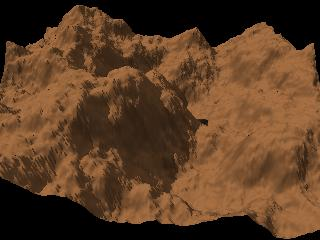
L'addition progressive de surfaces 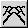 fonctionne en additionnant des surfaces
simples (ou primitives) de différentes grandeurs (ou longueurs
d'ondes). Habituellement, les surfaces primitives sont des cloches
gaussiennes, mais n'importe quel terrain déjà ouvert dans
Geomorph peut être utilisé.
Le rafraîchissement de la racine pseudo-aléatoire
regénère un terrain de disposition
différente, tout comme dans le cas des subdivisions 1 et 2.
Il faut cliquer le gros bouton "Activer" après
avoir changé un paramètre autre que la racine
pseudo-aléatoire.
Terrain "addition
progressive de surfaces"
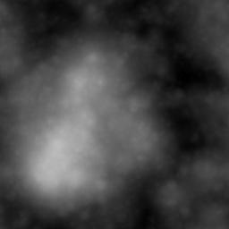 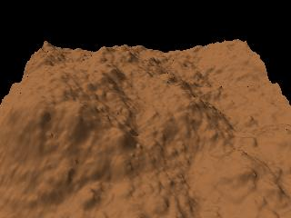
Ce terrain est composé de surfaces simples de toutes les
longueurs d'onde exprimées en puissances de 2 (ex. 256, 128, 64,
32, 16, 8, 4, 2 pour un terrain de 256x256), déplacées
aléatoirement.
Pour comprendre le principe, les prochaines images montrent comment on
peut superposer deux longueurs d'onde (ici 64 et 32) et les
déplacer aléatoirement sur le sol pour composer un
début de terrain.
Terrain "addition
progressive de surfaces"
- longueur d'onde unique 64 (terrain
256x256)
- déplacement XZ et
déplacement H à 0
- densité à 60
Terrain "addition progressive de surfaces"
- longueur d'onde 64 + 32 (terrain
256x256)
- déplacement XZ à 50
- densité à 60
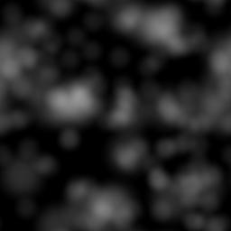 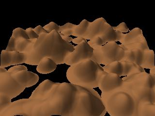
Le "Filtre de forme" 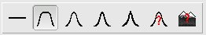 permet de faire
une "île" avec votre
terrain.
La même fonction étant disponible dans la
boîte à outils, vous pouvez l'appliquer plus tard.
La boîte à outils
La boîte
à outils s'affiche par défaut avec l'outil
luminosité / contraste 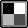 du bloc "Filtres et autres transformations" 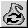 .
Les sous-dialogues propres à chaque outil ou
à chaque crayon s'affichent dans la même fenêtre,
contrairement à Gimp qui affiche des fenêtres
différentes.
La description des icônes d'outils s'affiche en y faisant glisser
le curseur de la souris. Voyez l'index
des outils
pour plus de détails.
Le bas de la fenêtre contient des boutons de contrôle
standard pour accepter les
modifications ou remettre le document dans l'état où
il se trouvait avant d'exécuter l'outil.
La modification courante est automatiquement acceptée lorsqu'on
bascule d'un document à l'autre, d'un outil à l'autre ou
du mode "Transformations" au mode "Dessin"  .
.
Vous pouvez
toujours annuler la dernière action en cliquant dans la barre de
menus, après une acceptation automatique.
L'organisation de vos travaux
Geomorph - Povray
L'installation de Geomorph copie dans le répertoire /home/.../geomorph/ des scripts de
scènes Povray prédéfinies, que l'utilisateur
suffisamment familier avec Povray peut adapter selon ses
préférences.
Une utilisation intensive de Geomorph avec Povray ne tardera pas
à remplir ce répertoire de plusieurs dizaines de
documents. On peut éviter ce problème en créant
un sous-répertoire par projet:
/home/.../geomorph/projet1/...
Le sous-répertoire d'un projet devrait contenir:
(1) Les différentes versions des terrains testés.
(2) Des copies des fichiers Povray que vous choisirez de modifier, le
cas échéant.
(3) Les terrains "secondaires" comme les "cartes des eaux"
et les terrains d'arrière-plan, utilisés par certains
scripts Povray. Comme ces terrains ont des noms fixes (ex. hf_water.png pour une carte des
eaux, peu importe le nom du terrain principal), il est
nécessaire de les créer dans des répertoires
distincts pour des terrains principaux distincts. La liste des scripts Povray
disponibles indique les terrains secondaires associés.
(4) Les images résultant du rendu Povray, qui portent
normalement comme nom le préfixe _ suivi du nom du terrain
principal.
Notez que les versions de Geomorph antérieures à 0.40
géraient les répertoires de travail d'une façon
incohérente.
Quelques conseils en
terminant
- Enregistrez régulièrement vos documents.
- Dans la fenêtre de la boîte à outils,
certaines options amènent des sous-dialogues qui
débordent du bureau. Parfois, vous ne verrez plus les
boutons de contrôle ("Accepter", "Remettre à 0", etc.).
Utilisez les boutons "Cacher le dialogue" / "Montrer le dialogue"
 pour
masquer les dialogues dont vous n'avez plus besoin.
pour
masquer les dialogues dont vous n'avez plus besoin.
- Pour déboguer une scène Povray
exécutée à partir de Povray, démarrer
Geomorph dans un terminal, vous pourrez alors lire les messages de
Povray.
Révisé le 18 janvier 2007
Contact: Patrice St-Gelais
Retour à l'index de la documentation